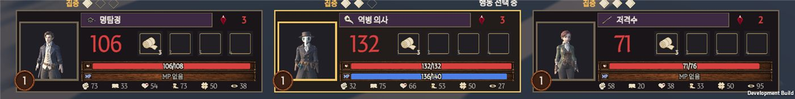
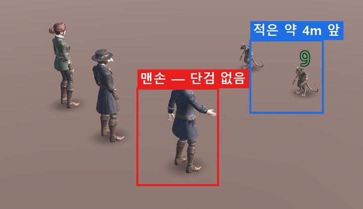
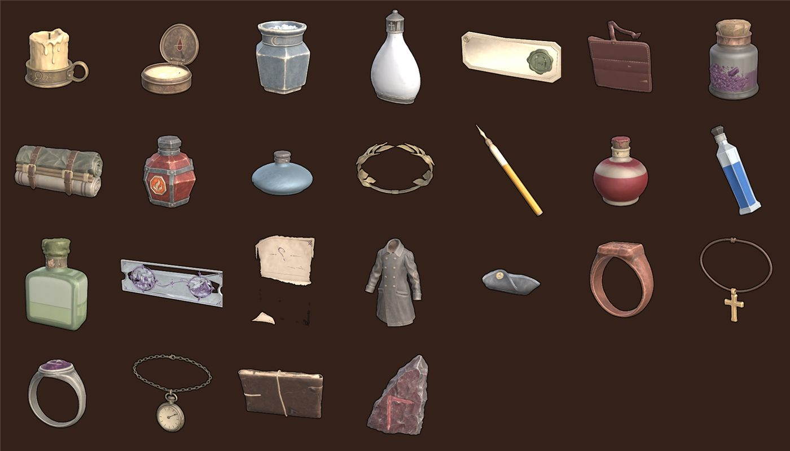

2026-11-12 · 개발 최동환 → 디자인(2D · 3D) · 11/16(월)까지 받으면 마감 안에 넣을 수 있어요
먼저: 11/10·11/11에 보내 주신 UI 그림·모션 N1~N8·아이템 모델 25개·런던 소품은 게임에 모두 넣었습니다. 고맙습니다. 이 문서: 아직 없는 것과 받은 파일에서 확인할 것을 모았습니다. 시간이 모자라면:꼭 필요 5개만 해 주세요. 나머지는 개발이 임시 그림으로 둡니다. 답하는 법: 번호와 날짜만. 예) "D9 11/15", "D7 다시 보냄", "M3 가".
1. 한눈에 보는 목록
번호
무엇
담당
중요도
D9
아군 3명 초상화 + 아벨 모로 적 칸 초상
2D
꼭 필요
D1
빠진 모델: 압박 붕대
3D
꼭 필요
D7
검시대 파일이 세척대와 같음
3D
꼭 필요
D8
약품장 파일 이름이 "돌 벤치"
3D
꼭 필요
M1
무기 4개 (명탐정·역병 의사·저격수·아벨)
3D
꼭 필요
D2
집문서 모델의 떠 있는 조각
3D
있으면 좋음
D4
보호막 방패 그림
2D
있으면 좋음
D10
아이템 종류 아이콘 17장
2D
있으면 좋음
M2
공격 동작 다시 (명탐정·저격수·아벨)
3D
있으면 좋음
M3
사신 낫 — 답만 (가/나)
3D
있으면 좋음
U11
분수대 · 석상 그림
2D
시간 남으면
U13
행동 아이콘 7개
2D
시간 남으면
U15
창 이름 칸 뾰족 장식 수정
2D
시간 남으면
D5
그림 없는 아이템 58개 (기획이 고른 것부터)
3D·2D
시간 남으면
D3
파일 이름 오타 4개 (확인만)
3D
확인만
걷기 동작(N9)은 1막 뒤로 미뤘습니다 (기획 결정: 1막은 선 채로 이동). 이번에는 안 해도 됩니다.
2. 꼭 필요 (5개)
D9아군 3명 초상화 · 아벨 모로 적 칸 초상 꼭 필요 2D
지금 캐릭터 카드 얼굴은 3D 모델을 찍은 사진이라 작고 어둡습니다.
대화 초상(N19 제임스 · N20 아벨 모로)처럼 그린 초상화가 필요합니다.
필요한 것: 명탐정 · 역병 의사 · 저격수 3장.
크기: N19·N20과 같은 3:4 세로, 투명 배경 PNG (예: 1086×1448). 얼굴이 위쪽 1/3 안에.
카드 얼굴 칸은 정사각형이라 개발이 얼굴 쪽을 잘라 씁니다. 대화 창에도 그대로 씁니다.
쓰는 곳: 아래 캐릭터 카드 · 보드 위쪽 파티장 칸 · 전투 순서 띠 · 가방.
같이: 전투 순서 띠·적 카드의 아벨 모로 얼굴. 대화 초상(N20)을 잘라 써도 되면 "N20 써도 됨"이라고만 답해 주세요.

지금 카드 얼굴 (왼쪽 칸)
답: 날짜 ___ / 아벨 적 칸: ☐ 새로 그림 ☐ N20 써도 됨
D1빠진 모델 — 압박 붕대 꼭 필요 3D
"판매 및 고정 획득 아이템 11종" 폴더에 10개만 있었습니다. 압박 붕대가 빠졌습니다.
모든 캐릭터 첫 슬롯에 있는 아이템이라 가장 자주 보입니다.
지금은 예전 손그림이라 다른 아이템과 느낌이 다릅니다.
답: 날짜 ___
D7폐검시소 "검시대" 파일 꼭 필요 3D
검시대.zip과 세척대.zip 안 파일이 똑같습니다 (둘 다 돌 세례대 모양).
검시대(시체를 눕히는 긴 대) 파일을 다시 보내 주세요. 폐검시소 전투 배경 가운데에 놓을 물건입니다.
답: ☐ 다시 보냄 (날짜 ___)
D8폐검시소 "약품장" 이름 꼭 필요 3D
약품장.zip 안 파일 이름이 "Stone Hearth Bench"(돌 벤치)입니다.
약품을 넣는 장(선반·찬장)이 맞는지 확인 부탁드립니다. 다른 파일이면 다시 보내 주세요.
답: ☐ 맞음 ☐ 다시 보냄
M1무기 4개 꼭 필요 3D
명탐정 · 역병 의사 · 저격수 · 아벨 모로가 모두 맨손이라 공격이 손짓처럼 보입니다.
11/11 모션 요청서 W1과 같습니다. 무기만 따로 된 파일로 주세요.
개발이 사신 낫처럼 오른손 뼈에 붙입니다. 캐릭터 모델은 다시 만들 필요 없습니다.
내보낼 때: Apply Transform · Scale 1.0 · Forward −Z · Up Y. 원본 .blend도 같이.

명탐정 공격 — 손에 아무것도 없음
답: 날짜 ___
3. 있으면 좋음
D2마리의 집문서 — 떠 있는 조각 3D
종이 아래 작은 조각들이 공중에 떠 있습니다. 아이콘에도 점처럼 찍힙니다.
조각을 지우거나 종이에 붙여 주세요.

셋째 줄 셋째 칸
D4보호막 방패 그림 2D
방어가 "보호막"으로 바뀌어 방패 그림이 생겼습니다. 지금은 개발이 그린 임시 그림입니다.
쓰는 곳: 카드 HP 칸 왼쪽(하트 자리), 캐릭터 머리 위.
크기: 64×64 투명 PNG. 하트 아이콘(Z07)과 같은 느낌.
D10아이템 종류 아이콘 17장 2D
그림 없는 아이템 58개는 지금 개발이 그린 종류 아이콘을 씁니다 (아래 사진).
같은 이름으로 그려 주시면 파일만 바꿉니다.
무기 10: 단검 · 검 · 대검 · 창 · 활 · 권총 · 장총 · 스태프 · 마법서 · 악기